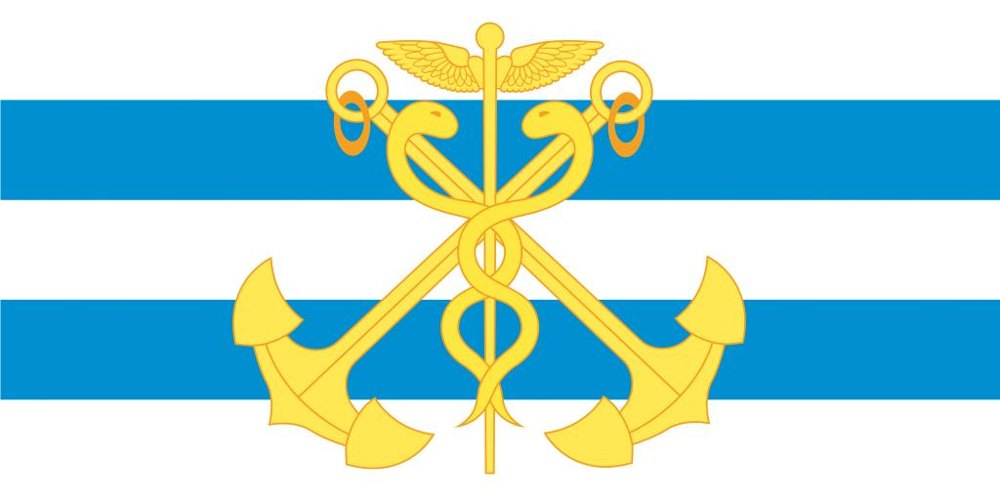
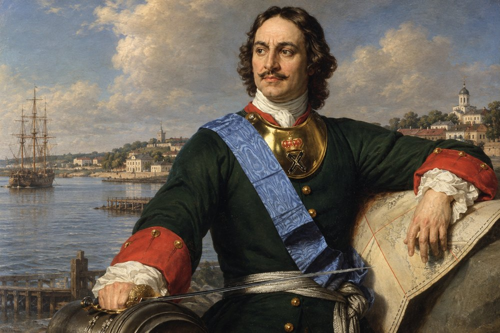

Руководитель
Таганрог
Молодёжь Таганрога вместе делает город лучше
Волонтёрство, образование, патриотические проекты и общение с единомышленниками.
61 000молодых жителей города от 14 до 35 лет
15участников отделения
100+проведённых мероприятий
Кто мы
01
Волонтёрство
Помощь городу, социальные акции и поддержка жителей.
02
Образование
Лекции, семинары и подготовка лидеров молодёжного движения.
03
Патриотика
Памятные мероприятия, встречи с ветеранами и совместные проекты.
04
Спорт и досуг
Турниры, походы и командные события для молодёжи.
Руководство
Первый заместитель
Самые активные
Новости
Ближайшие события
История города
Таганрог основан в 1698 году по указу Петра I как крепость и база Азовского флота. Мы продолжаем традиции тех, кто строил и защищал этот город.

Флаг Таганрога

- 1698Пётр I основывает крепость на мысе Таган-Рог, которая становится базой Азовского флота.
- 1712Город разрушен в соответствии с условиями Прутского мирного договора.
- 1775Таганрог получает статус города и становится крупным портом.
- 1860В Таганроге родился Антон Павлович Чехов.
- 1941–43Город находился под оккупацией. Молодые таганрожцы создали подпольную организацию.
Вопросы
С какого возраста можно вступить?
От 14 до 35 лет.
Нужна ли подготовка?
Нет, приглашаем без специальной подготовки.
Как записаться?
Заполните форму «Вступить» или свяжитесь с руководством.